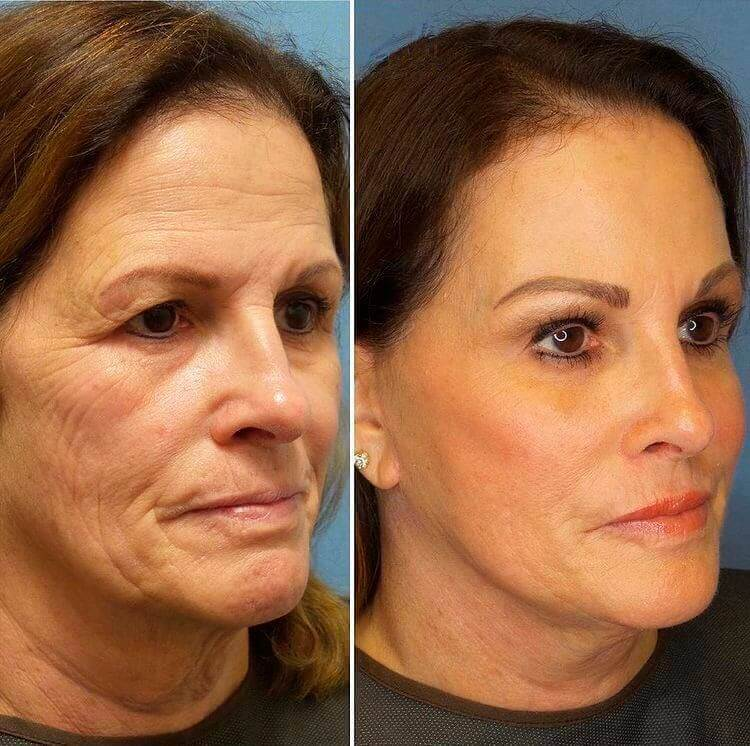
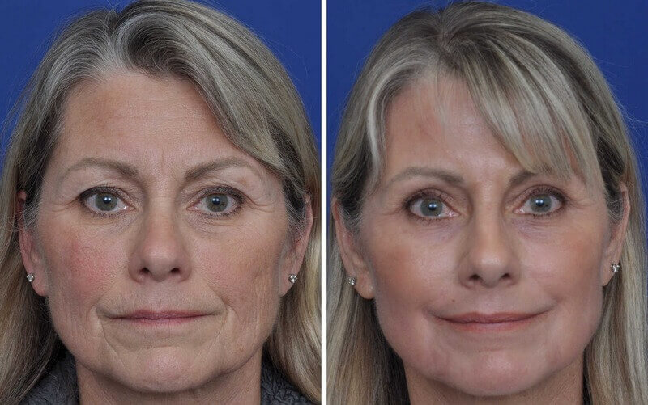

O tânără inventează o îngrijire facială puternică anti-îmbătrânire


O simplă fată română trebuie să-și facă fericită mama sa dezvoltând întinerirea facială, care a devenit o descoperire științifică.
Pasagerii Aeroportului Internaţional Henri Coandă au fost martori la o poveste incredibilă. Ofițerii poliției de frontieră au întârziat o femeie de 45 de ani care a efectuat un zbor Henri Coandă-Roma. Motivul a fost că fotografia unei alte persoane era în pașaportul ei.
Femeia a protestat împotriva acuzației, explicând că pașaportul îi aparținea. Ea a justificat o astfel de diferență între fotografie și realitate prin faptul că destul de recent unul dintre studenții medicali a inventat un tratament facial care i-a schimbat aspectul. Acest student a fost fiica ei.
Lucrătorii aeroportului au fost, de asemenea, mai confuzi de faptul că pașaportul a fost eliberat în urmă cu aproximativ o lună. Împreună cu diferențele radicale privind aspectul fetei, situația generală a devenit din ce în ce mai suspectă. Potrivit ofițerului de poliție de frontieră Gabriela Cristea, persoana din fotografie arăta cu 15 ani mai în vârstă decât în viața reală.

Bună ziua, Maria! Vă rog să dezvăluiți secretul, cum v-a venit în minte ideea de a crea un tratament facial atât de inovator?
Un astfel de act din partea mea a devenit o manifestare de recunoștință față de mama mea pentru tot ceea ce a făcut pentru mine în viață. Am muncit din greu la această persoană, la fel cum a lucrat în fiecare zi pentru a-mi oferi un viitor promițător și demn. Cu câțiva ani în urmă, tatăl meu a decis să părăsească familia, ca urmare, mama mea a suferit un stres sever. Vă puteți imagina cât de greu și dureros a fost pentru ea să mă crească singură? Am vrut doar să am grijă de cea mai dragă persoană din viața mea.
Cum ați sprijinit-o?
Am încercat să-i arăt că 45 de ani este punctul de plecare pentru aspirație și prosperitate. Deoarece divorțul a spulberat credința mamei mele în frumusețea ei, a făcut-o mai singură și mai puțin încrezătoare, mi-am promis mie, indiferent de ce este nevoie, să o fac fericită. Am vrut să o fac mai tânără și mai frumoasă, deoarece este atât de important pentru o femeie să se simtă la 100%.
- De aceea ați decis să inventați ceva special și să-l prezinți mamei dvs.?
Sigur! Sunt studenta la Universitatea de farmacie și din moment ce îmi voi primi în curând diploma, abilitățile mele au fost testate de-a lungul anilor. Cea mai bună confirmare a eficacității invenției mele este povestea unei călătorii în Roma. După ce am câștigat mulți bani, dorința mea de a-i oferi mamei emoții și relaxare de neuitat a crescut în fiecare zi. Am vrut să se odihnească și poate să întâlnească pe cineva. Întrucât mama nu a fost niciodată în străinătate, i-am dat un nou pașaport. Imaginați-vă cât de mult s-a schimbat aspectul ei într-o perioadă scurtă de timp.
Lucrul este că mi-am brevetat formula, care ajută să facă față ridurilor (chiar și celor mai adânci) și face conturul feței frumos și tonifiat. De asemenea, invenția mea luptă cu pungile de sub ochi. Mai mult, după ce mi-am brevetat formula, am postat-o pe Internet. Multe companii farmaceutice mi-au scris și m-au sunat, arătându-și dorința de a cumpăra drepturile la dezvoltarea mea.
- Deci ați vândut-o?
Motivul pentru care credeți acest lucru înseamnă că nu înțelegeți opinia principală pe care o urmez. Scopul meu nu este de a face bani, dimpotrivă – misiunea mea este de a ajuta toate femeile care nu își pot permite intervenții chirurgicale scumpe să devină frumoase. Deoarece produsul a fost inițial dezvoltat pentru mama mea, intenționez să-mi susțin principiile.
- Am auzit că acum aveți producția dvs. Vă rog, spuneți-ne mai multe despre asta.
Da, este adevărat. Universitatea mea m-a ajutat cu asta. Împreună cu laboratorul și Institutul nostru de cercetare, am reușit să stabilim producția de agenți anti-îmbătrânire. De asemenea, am venit cu o idee despre numele produsului –.
"Este dificil să subestimezi unicitatea produsului Mariei, deoarece văd toate rezultatele minunate cu ochii mei. Formula unică și ingredientele naturale, de calitate, asigură rezultate uimitoare. Bravo, cred că e un progres.
este potrivit pentru toată lumea datorită calității ridicate a ingredientelor. De asemenea, nu are efecte secundare. Indiferent de vârstă, efectul este evident. Chiar și femeile de peste 65 de ani pot aplica această cremă și se pot bucura de rezultat. Ridurile adânci au fost netezite rapid, uscăciunea și lăsarea pielii au dispărut - acesta este efectul imediat al cremei. De asemenea,ajută fetele tinere să prevină îmbătrânirea prematură a pielii prin hrănirea și hidratarea acesteia cu substanțe benefice.
Acesta este un produs anti-îmbătrânire cu adevărat unic."
Răzvan Pascalau (cercetător principal, Laborator al Universității de Medicină)
"În mod natural, o cremă anti-îmbătrânire de calitate la un preț scăzut este un fenomen nou pentru farmacii. Nimeni nu ar fi de acord să atingă o piață stabilită prin eliberarea unui produs la un preț scăzut. Am decis să-l vindem singuri."
Cornel Graur (șef al Institutului de Cercetare)
Când am întâlnit-o pe mama lui Maria, ea și-a amintit incidentul de la aeroport cu un zâmbet.
- După ce nu au vrut să mă lase în Roma, nici măcar nu m-am destrămat - râde Aurelia. Când am fost suspectată de fraudă la biroul de pașapoarte, am simțit o astfel de plăcere!
- Știți ce anume a inspirat fiica dvs. să creeze o astfel de capodoperă?
Sunt foarte recunoscătoare pentru ceea ce a făcut pentru mine. Momentul în care a adus prima cutie deva rămâne pentru totdeauna în memoria mea. Nici nu mi-am putut imagina că în curând produsul va câștiga o astfel de popularitate și multe femei vor găsi tinerețe veșnică.
- Este adevărat că ați văzut primul rezultat într-o lună?
Absolut! Am fost atât de fericită și șocată să văd cât de bine funcționează crema fiicei mele. Singura condiție pe care trebuie să o respectați este să aplicați crema zilnic. Drept urmare, am început să arăt cu 15 ani mai tânără!
Nu este vorba despre aspect, ci despre consecințele pe care le-am primit datorită comportamentului încrezător. Am fost promovată la locul de muncă și în fiecare zi primesc complimente nu numai de la prieteni, ci și de la oameni din locuri publice. Am sentimentul că au început să mă trateze cu mai multă afecțiune și să arate mai multă bunătate.
Poate că sunteți interesați să știți dacă am zburat la Roma sau nu? Răspunsul este Nu. Dar acum am o nouă relație și în curând zburăm în vacanță împreună. Trăiesc viața într-un mod nou, așa pot descrie efectele pe care fiica mea l-a inventat. Acum toți devin mai în formă, mai tineri și mai frumoși!
Ce spun oamenii despre ?
"Ce produs excelent!!! Aș prefera mai degrabă să fiu retrasă din toate zborurile din viața mea,
dar pentru a obține aspectul la care visam mereu!"
- Sofia Albot

"În cele din urmă am găsit soluția și numele ei "
-Olivia Drăguțanu
"Excelent!"
- Anișoara Puhoi

"Minunat!"
- Emilia Bădălău

"Haideți să întinerim împreună! Chiar cred că frumusețea ta începe în interior. Tinerețea externă
oferă o senzație foarte plăcută de tinerețe."
- Cristina Boaghe

"Datorită efectului acestei măști, viața mea căsătorită s-a îmbunătățit. Am de 3 ori mai mult sex,
în fiecare zi soțul meu spune complimente și mă tratează așa cum ne-am întâlnit prima dată."
- Elisabeta
Untilă
"Privind fotografiile mele vechi, nu-mi vine să cred ochii. Iar tu? Ciupește-mă!"
- Liliana
Dragomirescu
"Acum am nevoie de o lupă pentru a vedea defectele care au fost vizibile anterior de departe.își face treaba bine, deoarece ridurile și pielea mea lăsată au
dispărut."
- Sanda Golban

"Sunt atât de bucuroasă că am găsit această cremă. M-am iubit și mai mult. Multe mulțumiri!"
-
Elena Purcescu
"Acum pot merge la cumpărături cu fiica mea, ceea ce îi face pe oameni să creadă că suntem
prieteni de aceeași vârstă. Este chiar jenant să recunosc că am 43 de ani și, în plus, nimeni nu o va
crede!"
- Renata Drăgușanu
Important: a trecut toate studiile clinice și este disponibil pentru vânzare pe teritoriul României. Datorită cererii mari, numărul de produse contrafăcute a crescut. Aveți grijă să nu cădeți pentru site-urile clonate ale rețelelor de farmacii și ale corporațiilor farmaceutice care se opun vânzării de produse noi.